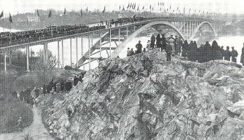

Södermalm i tid och rum
Ur Södermalm. Åtta kulturhistoriska vandringar, Monica Eriksson, 1997Pålsundet mellan Södermalm och Långholmen pålades igen 1624 för att inkommande fartyg inte skulle kunna ta sig fram denna väg i stället för att passera sjötullen på öns norra sida. Pålsundsbron leder över till Långholmen, där Mälarvarvet ligger. Varvet har gamla anor, det startades redan 1685.
|
 Invigning av Västerbron 1935 |
Vi fortsätter västerut längs Pålsundet och går under Västerbron, som färdigställdes 1935. Den fick stor betydelse för förbindelserna till och från västra Södermalm. Dessa hade redan förbättrats genom den nya Liljeholmsbron. Så går vi förbi Lorensberg. Av denna egendom återstår ett stenhus i två våningar från 1866 med en lägre flygel. Nu är vi framme vid Långholmsbron som byggdes 1931. Flera tidigare broar har funnits, den äldsta från 1667. Vi går över till Långholmen, den gröna ön. Grönskan är inte särskilt gammal och inte heller ursprunglig. Fångar fick under 1800-talets senare del fylla bergsskrevorna med jord och mudder så att man skulle kunna plantera träd och buskar. Därigenom ville man ge ön ett mer tilltalande utseende för dem som kom med båt och dessutom dölja fängelsebyggnaderna. |
Långholmen förknippades länge i första hand med fängelset. Fängelseepoken är slut, men många av fängelsebyggnaderna har bevarats. Utanför det egentliga fängelseområdet finns en del gamla byggnader som tidvis har använts som bostäder för fängelsets personal.
Långholmen, som tillhörde kronan, donerades 1647 till staden av drottning Kristina. Äldst på Långholmen är sjötullen från 1622. Då tillkom en tullordning för Stockholm, lilla tullen. Staden skulle omges av ett tullstaket med portar. Sjötrafiken skulle också passera tullstationer. En sådan, Lilla Sjötullen, anlades på Långholmens norra sida.
Jochum Ahlstedt byggde 1670 på Långholmen en malmgård som han kallade Alstavik. Till malmgården hörde trädgårdar och fiskdammar i Pålsundet. 1724 inköpte Kommerskollegium Alstavik för att där inrätta ett spinnhus, avsett som tvångsarbetsinrättning för lösdrivare, folk utan ordnat arbete och bostad. Särskilt blev det en plats där lösaktiga kvinnor hamnade. Anledningen till att man valde spånad som straff var att de många textilfabrikerna behövde mycket garn. De manliga fångarna skulle raspa bresiljeträ för att få blå färg att färga garner och tyger med. Något rasphus inrättades dock aldrig. Först användes några rum i Alstavik som spinnhus. 1746 började man bygga till spinnhuset. Alstavikhuset, som finns kvar, är spinnhusbyggnadens norra del. När spinnhuset inrättades, tillkom en särskild kår inom stadsvakten, beslagskarlar eller "paltar", som skulle fånga in lösdriverskor på gatorna. På 1820-talet flyttades de kvinnliga fångarna från Långholmen, och därefter har fängelset endast haft manliga interner.
Vi går över Långholmsbron och har framför oss en byggnad som kallas Fyrkanten. I den ingår delar av Alstaviks stall och vagnshus. Gå till höger om Fyrkanten uppför backen. Till vänster har vi spinnhuset. Till höger ligger Centralvakten som byggdes 1858-59 som bostäder för vaktpersonal. Nu finns det daghem och bostäder här. Vi fortsätter upp till en stor öppen plats. Här låg Centralfängelset som uppfördes 1874-1880. Redan 1948 beslöts att fängelset skulle flyttas från Långholmen, men fängelselsetiden fortsatte till 1978. 1982 revs Centralfängelset. Längst uppe på kullen ligger en byggnad som nu är folkhögskola. Den var fängelsets fasta paviljong.
Gå nu till vänster, längs den norra sidan av spinnhusbyggnaderna. I spinnhuset finns konstnärsateljeer. I Alstavik och i Sjukhuset, en tillbyggnad till Alstavik, finns värdshus och konferenslokaler. Vi går genom en port i fängelsemuren och kommer till Kronohäktet, som inrättades 1850 i en ombyggd klädesfabrik. Där finns nu hotell och vandrarhem samt ett museum som berättar fängelsets historia (öppettider och visning: tel. 668 05 00). Norr om vägen ligger en gul träbyggnad, Stora Henriksvik, och ett stycke längre bort den eleganta Direktörsvillan, byggd 1914 som bostad för fängelsedirektören.
Vi går vidare norr om Gråbo, en bostadslänga från 1920-talet, och är snart framme vid Lilla Sjötullen. Tullen låg först på vikens östra sida. 1784 flyttades den ett stycke västerut till ett stenhus i två våningar som tidigare varit urfjädersfabrik. Tullskrivarens hus från den äldsta tullens tid finns kvar och kallas Stora Henriksvik. Det användes länge som bostad för fängelsets präst. Nu finns där ett Bellmansmuseum (öppettider och visning: tel. 669 69 69). 1809-10 avskaffades den lilla tullen. Tullstationerna fungerade därefter som inspektionsplatser. Sjötullen användes på detta sätt till 1857. Sedan fick fängelsepersonal bo i Sjötullens byggnader.
Så vänder vi tillbaka och går söder om Gråbo. Till höger har vi två röda träbyggnader, Stora och Lilla Knapersta. Immanuel Nobel lät 1830 uppföra Stora Knapersta. Lilla Knapersta är ett klockarboställe från 1700-talet som flyttades hit 1874-76. Det låg tidigare norr om spinnhuset. Knaperstahusen har varit tjänstebostäder för fängelsepersonal. I husen finns sedan slutet av 80-talet kakelugnsmakeri (Stora Knapersta och tapettryckeri (Lilla Knapersta).
Vi följer vägen söderut längs Kronohäktet. Snart har vi till höger en träbyggnad som varit fängelsets tvättstuga. Här finns nu snickeri. Så viker vi av till vänster och går söder om muren tillbaka till bron. Innanför muren ligger ett hus som kallas Riddarhuset. Till höger om vägen ligger Underofficershuset, en 1700-talsbyggnad som använts som bageri, bryggeri och tjänstebostäder. Så är vi tillbaka vid Långholmsbron.
Väljer man att gå mot öns östra del, kommer man till lekpark, kaffestuga och klippbad. Här finns också Långholmens friluftsteater och Mälarvarvet.
Promenerar man mot väster, kommer man till byggnader som varit eleganta sommarnöjen. Karlshäll, byggt 1838 av Carl Modéer, fängelsets arbetschef, blev 1874 sommarnöje för L.O. Smith som hade spritfabrik på Reimersholme. Karlshäll var under lång tid vårdhem. Det upprustades på 80-talet. Nu finns restaurang, festvåning och konferenslokaler i byggnaderna. Ett annat sommarnöje på västra Långholmen är Sofieberg. Vi går tillbaka över Långholmsbron.